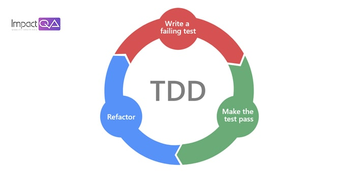

Test-driven development (TDD) on tarkvaraarenduse metoodika,
mis keskendub iteratiivsele arendustsüklile, kus rõhk asetatakse
testjuhtumite kirjutamisele enne tegeliku funktsiooni või
funktsiooni kirjutamist.
Sammud:
1. Loetlege uue funktsiooni stsenaariumid
2. Kirjutage loendis oleva üksuse jaoks test
3. Käivitage kõik testid. Uus test peaks eeldatavatel põhjustel ebaõnnestuma
4. Kirjutage kõige lihtsam kood, mis uue testi läbib
5. Kõik testid peaksid nüüd läbima
6. Refaktoreerige vastavalt vajadusele, tagades samal ajal kõigi testide eduka läbimise
Joonis:

Näide ühest case-vahendist:Postman
Head ja vead
| Head | Vead |
|---|---|
| Koodi kvaliteet | ei pruugi sobida igale projektile |
| Hästi dokumenteeritud kood ehk nõuded on hästi selged | testid võivad olla halvad ja ei pruugi leida viga hiljem |